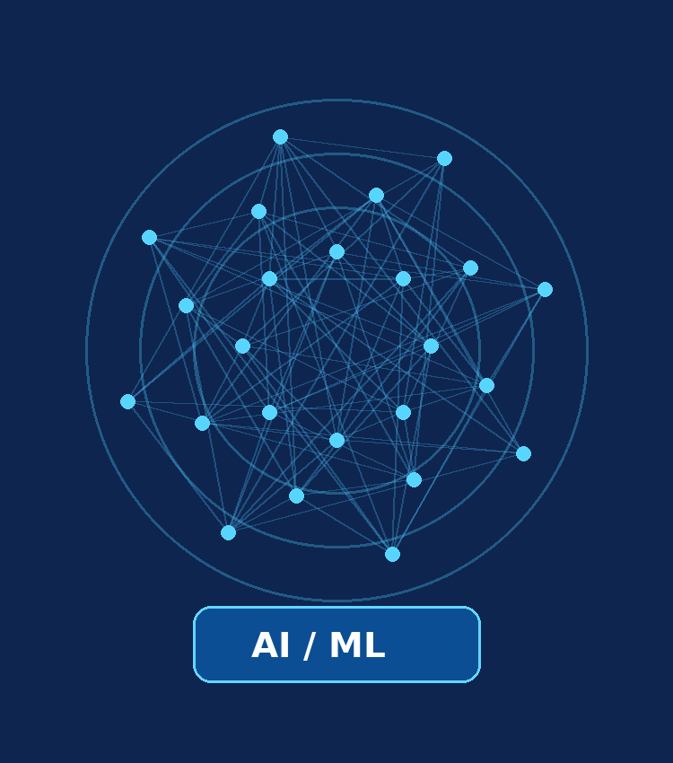

Ajit Singh
I'm an AI Systems Student
Learning, building and exploring intelligent technologies.
Explore my CVAbout Me
An introduction to my studies, interests, and goals.

Applied Artificial Intelligence Student
Hello! I'm Ajit Singh, a student passionate about artificial intelligence, programming, and solving real-world problems with technology.
- Field: AI Systems
- University: VILNIUS TECH
- Location: Vilnius, Lithuania
- Goal: Grow as an AI developer
I am developing my skills through university coursework and practical programming exercises. I enjoy understanding how software works, exploring data, and creating useful digital projects. My aim is to build a strong foundation in AI, software development, and responsible technology.
Skills & Learning
Topics I am studying and practicing as an AI Systems student.
Programming
Practicing C++, Python, MATLAB, and basic HTML while learning programming concepts.
Algorithms & Data
Learning fundamental algorithms, data structures, and relational databases.
Artificial Intelligence
Exploring AI concepts, machine learning foundations, and mathematical thinking.
Development Tools
Using Visual Studio Code, GitHub, and other tools to practice building projects.
Education & Experience
A brief overview of my educational journey and practical learning.
Education
Bachelor's Studies — Applied Artificial Intelligence / AI Systems
Current
VILNIUS TECH, Vilnius, Lithuania
Studying programming, algorithms, mathematics, and AI-related subjects.
Diploma in Information Technology
Completed 2022
Built an initial foundation in computing and information technology.
Hands-on Learning
University Programming Exercises
Coursework
- Writing and testing C++ programs and data structures.
- Creating MATLAB scripts, functions, and visualizations.
- Practicing HTML and publishing code using GitHub.
Career Objective
Future Goal
Continue improving programming and AI skills through coursework and practical projects.